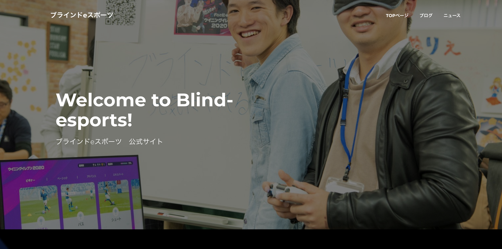
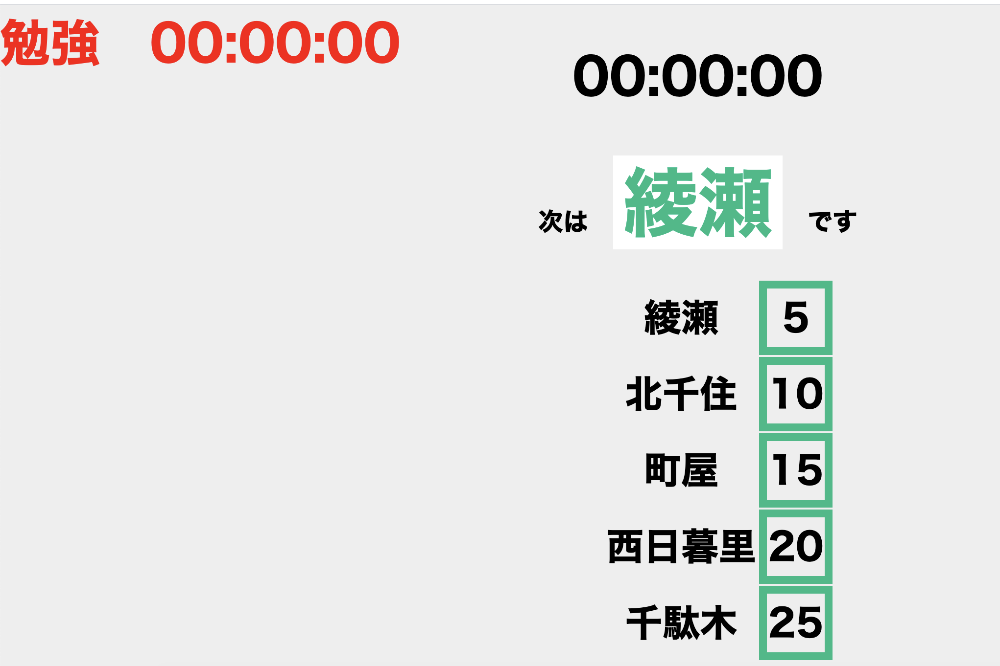
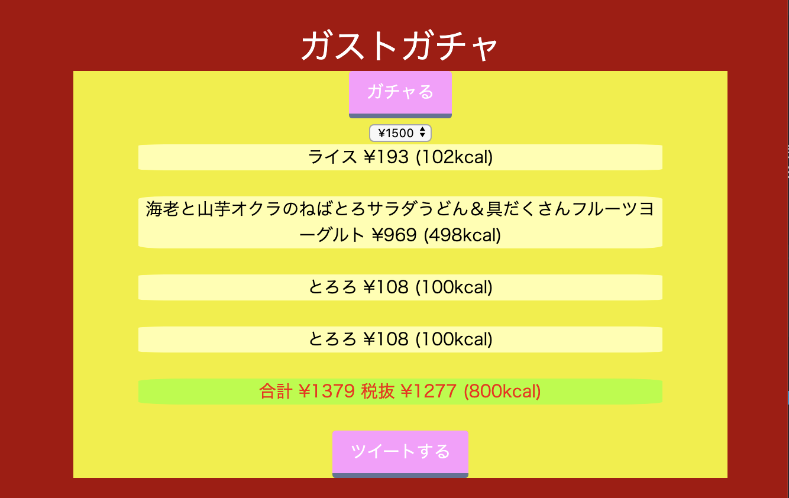
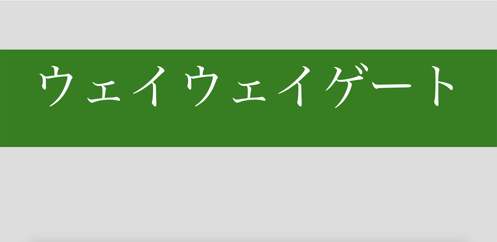

Works

私がメンバーとして活動している「ブラインドeスポーツ」の
Webサイトの作成を担当。
Wordpressを利用して作成し、
現在でもブログを投稿中。
ブラインドeスポーツ Webサイト
https://blind-esports.com/
私がメンバーとして活動している「ブラインドeスポーツ」の
Webサイトの作成を担当。
Wordpressを利用して作成し、
現在でもブログを投稿中。

ポモドーロタイマーを駅名でわかりやすくした物。
実際の間隔ではなく5分間隔に統一した。
HTML/CSS/JSで作成。
スマホ利用が可能。
鉄道ポモドーロタイマーVer2
https://nakano1120.github.io/pomodoro/5min-chiyoda.html
ポモドーロタイマーを駅名でわかりやすくした物。
実際の間隔ではなく5分間隔に統一した。
HTML/CSS/JSで作成。
スマホ利用が可能。

Twitterに上がっていた「サイゼリヤガチャ」を模して作成。
サイゼリヤガチャと基本のルールは変わらず、
規定の値段までのランダムなメニューが出る仕組み。
ツイート機能や値段上限変更機能も完備。
ガストガチャ
https://nakano1120.github.io/gusto/index.html
Twitterに上がっていた「サイゼリヤガチャ」を模して作成。
サイゼリヤガチャと基本のルールは変わらず、
規定の値段までのランダムなメニューが出る仕組み。
ツイート機能や値段上限変更機能も完備。

「高輪」「ゲート」「ウェイ」がランダムで出るゲーム。
「ズンドコキヨシ」と基本は同じ。
字体を明朝体にしたところがこだわり。
高輪ゲートウェイゲーム
https://nakano1120.github.io/takanawagateway/index.html
「高輪」「ゲート」「ウェイ」がランダムで出るゲーム。
「ズンドコキヨシ」と基本は同じ。
字体を明朝体にしたところがこだわり。